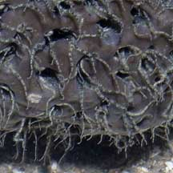
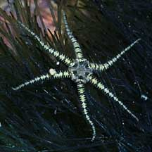
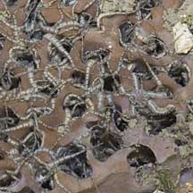
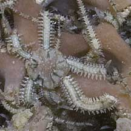

|
|
| brittle stars text index | photo index |
| Phylum Echinodermata > Class Stellaroida > Subclass Ophiuroidea |
| Tiny
in-a-sponge brittle stars Ophiactis savignyi* Family Ophioactidae updated Apr 2020 Where seen?These tiny brittle stars are commonly seen in living Chocolate sponges on many of our shores. They are sometimes also seen in other kinds of sponges. Features: Whole animal 1-2cm. 5-6 arms. Arms banded with short spines lying flat arong the arms. Central disk rarely seen outside its hiding place. Sometimes, larger brittle stars with white arms are also seen in the same sponge. A single sponge may be home to lots of brittle stars, each hole in the sponge sheltering one tiny brittle star. With their arms waving out, the brittle stars give the submerged sponge a 'furry' look. Sometimes confused with tiny brittle stars seen under stones and bristleworms. Here's more on how to tell apart bristleworms and brittle stars. Baby brittle stars: This brittle star can reproduce sexually as well as asexually by division of the central disk, each half regenerating arms and other body parts to produce two new animals! |
 The arms of countless brittle stars can make a sponge appear 'hairy'. |
 Outside the sponge? |
|
 Pulau Sekudu, Jun 05 |
 |
 Larger white brittle stars among the tiny banded ones. Pulau Sekudu, Jul 04 |
*Species are difficult to positively identify without close examination.
On this website, they are grouped by external features for convenience of display
| Tiny in-a-sponge brittle stars on Singapore shores |
On wildsingapore
flickr
|
| Other sightings on Singapore shores |
| Filmed on Pulau
Hantu on 12 Apr 09 condo sponge w brittlestars 12Apr2009 from SgBeachBum on Vimeo. |
|
Links
References
|